RECOMENDAÇÕES DE ESTUDOS PARA PROVAS FINAIS:
BOAS PRÁTICAS DE QUALIDADE E GOVERNANÇA EM PROJETOS DE SOFTWARE
SCRUM: domínio completo da aplicação do processo (elaboração de backlog de produto e Sprint, definição do número de sprints, funcionamento dos Time Boxes, artefatos de controle do projeto – KANBAN e BurnDown) – associação entre Milestones (entregáveis de projeto) e o backlog de produto.
Propósito e conhecimentos gerais sobre os passos da análise de pontos de função – foco na identificação e classificação de CFBs (ALI, AIE, EE, SE, CE)
|
Componente Funcional Básico |
||||
|
Interação função de transação |
Armazenamento função de dados |
|||
|
Entrada Externa |
Saída Externa |
Consulta Externa |
Arquivo Lógico Interno |
Arquivo de Interface Externa |
|
Capturar Dados externo do sistema |
Gera dados para fora do sistema e envolve uma transformação dos dados. |
Retorna os dados sem transformar. “Select Bruto” |
Base de dados |
usada na troca de dados entre o sistema em desenvolvimento e outros sistemas externos (legados). |
Quantidade de dados que cada Componente Funcional Básico opera.
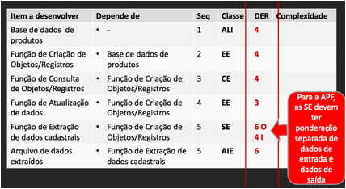
Um Componente Funcional lê um arquivo do sistema e gera
outro de exportação de dados para outro sistema, ele acessa 1 Arquivo Interno e
1 Arquivo Externo, portanto, referencia 2 ALR.
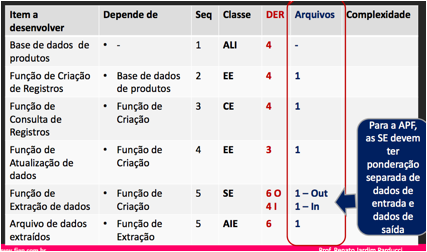
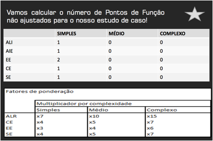
Serve para atribuir um peso aos requisitos não funcionais do
sistema.
Atribuir uma nota de 0 a 5 para cada item abaixo e somar para obter o fator de
ajuste
1. TELEPROCESSAMENTO
2. PROCESSAMENTO DISTRIBUÍDO
3. PERFORMANCE
4. CARGA DE MÁQUINA
5. VOLUME DE TRANSAÇÕES
6. ENTRADA DE DADOS ON-LINE
7. ATUALIZAÇÕES ON-LINE
8. EFICIÊNCIA DO USUÁRIO FINAL
9. COMPLEXIDADE DE PROCESSAMENTO
10. REUTILIZAÇÃO DE CÓDIGO
11. FACILIDADE DE IMPLANTAÇÃO
12. FACILIDADE DE OPERAÇÃO
13. FACILIDADE DE MANUTENÇÃO / ALTERAÇÕES
14. OPERAÇÃO EM MÚLTIPLOS LOCAIS
Fator de Ajuste Final = 0,65 + (0,01 x Fator de Influência
Total)
PF Ajustados Finais = Total de PF não ajustados x Fator de Ajuste Final
Níveis de testes baseados no modelo “V”; Tipos e Técnicas de
testes – conceitos.
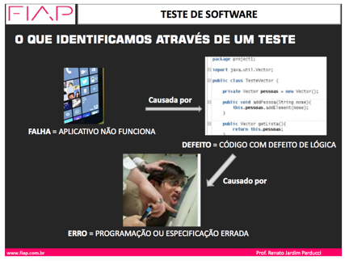
Entender para que serve cada item do modelo e como um subsidia o outro.
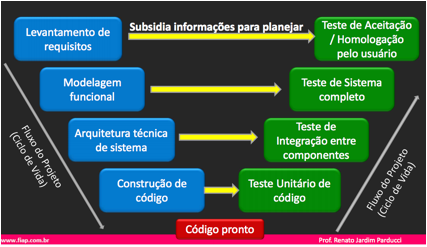
Avaliação da lista de requisitos do Backlog de Produto
Responsável: Analista de Processos e Negócio com o Cliente
Avaliação da compatibilidade entre os Modelos de
especificação funcional (UML e MER, por exemplo), com os requisitos e entre
cada componente da modelagem (Classes x Use Case, por exemplo).
Responsável: Analista de Sistemas com o Analista de Processos e Negócio
Avaliação da definição de como os componentes vão ser distribuídos em módulos e agrupados por serviços, quais irão compor a biblioteca de reuso, qual a forma de comunicação entre componentes, qual hardware e software básico será empregado para montar os ambientes de Desenvolvimento, Teste e Produção.
Responsável: Arquiteto de Solução com o Analista de Sistema
Avaliação de aderência de escopo do código fonte com as especificações de arquitetura e sistema (Algoritmos de componentes versus Código escrito em linguagem de programação, Tabelas construídas versus especificação em Modelo E-R, são exemplos). Responsável: Programador, que interage pontualmente com o Analista de Sistema ou Arquiteto de Solução para dirimir dúvidas
Avaliação do código fonte, seus desvios lógicos, seus cálculos, formatação de saída e validações de entradas de dados. Responsável: Programador, que interage pontualmente com o Analista de Sistema ou Arquiteto de Solução para dirimir dúvidas.
Aplica um plano e um roteiro de casos de teste de comunicação entre componentes do sistema de aplicação, confirmando a passagem adequada de parâmetros, protocolos de comunicação, produção de arquivos de entrada e saída de dados. Responsável: Especialistas em testes que alinharam quais avaliações fazer com os Analistas de Sistema e Arquitetos de Solução. Podem ou não contar com o apoio do Programador
Avaliação do funcionamento do sistema como um todo, com todos os seus programas de aplicação, simulando as rotinas de negócio. Os testes são direcionados aplicando um plano de testes que inclui roteiros e casos de testes com controle de dados de entrada e saída previstos, tomando como base os Casos de Uso e Cenários de Uso. Responsável: Especialistas em testes que alinharam quais avaliações fazer com os Analistas de Sistema e têm acesso aos documentos de especificação funcional e não funcional e modelos sistêmicos.
Experimentação pelo cliente para que ele aprove o software para liberação. Responsável: Usuário
Avaliar o funcionamento do software (Teste Funcional), olhando para o serviço que o software deve prestar, a informação que deve gerar, guardar, processar, distribuir, proteger
Exemplo Excel – Tabulação de dados, Fazer Soma, Calcular Percentual
Avaliar atributos da qualidade dos software não relacionados com o seu funcionamento como a estética, facilidade de uso, velocidade de resposta.
Exemplo Excel – Aparência dos gráficos, Facilidade para digitar Fórmulas
Avaliar desenhos técnicos, projeto de engenharia e arquitetura do software.
Exemplo Excel – Protocolo de Integração com banco de Dados MS-SQL, Conectividade OLE com PowerPoint.
Os testes sobre mudanças são tratados de uma forma especial, pois: 1º) Não precisamos testar todo o sistema novamente quando mudamos um componente – precisamos testar apenas os componentes relacionados, observando as matrizes de integridade referencial. 2º) Podemos reaproveitar testes já elaborados anteriormente para reavaliar programas que não foram modificados mas serão re-testados, focando esforços em construir novos casos de testes somente para aquilo que é novo.
Avalia se o componente modificado está eficaz, eficiente e efetivo
Avalia se os componentes não modificados mas que operam em conjunto com aquele que foi alterado, continuam operando com eficácia, eficiência e efetividade. São testes repetitivos que verificam que, a cada nova versão do sistema, partes que ja__ estavam funcionando corretamente, continuam funcionando e na__ o estão sendo afetadas pelas mudanças. A mecanização desses testes deve ser visada, uma vez que são repetitivos
Caixa Preta e Caixa Branca
Testes automatizados – Ex. Selenium.
ELABORAÇÃO
DE CASOS DE TESTE
Com base em Caso de Uso; na avaliação de Complexidade
Ciclomática; na avaliação de Limites; na avaliação de Condição e Equivalência;
na avaliação de Enlaces.
Passo a Passo de como executar um teste. Aplica um tipo e uma técnica de teste.
Cobre os casos positivos e os casos negativos.
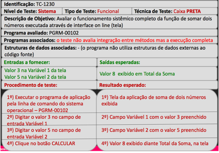
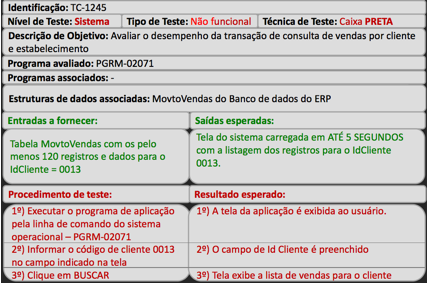
Sequência que os casos de teste devem ser executados. Cobre um nível de Teste
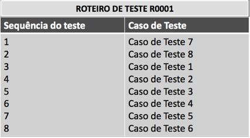
Cronograma de aplicação de testes.
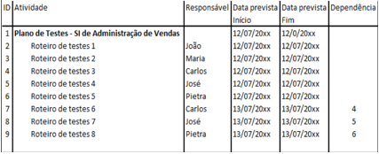
Cobertura dos Testes, Taxa de Sucesso e quantidade de testes remanescentes.
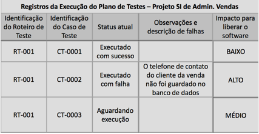
Métodos ponderados por Classe (WMC)
CMi = número de métodos da Classe i
WMC = número de métodos resultante da soma dos métodos de todas as Classes
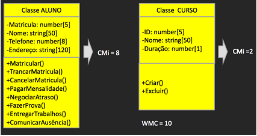
Quanto maior o número de métodos, mais complexa a Classe em termos do seu desenvolvimento e manutenção – deve ser verificada a possibilidade de especialização para Classes com uma quantidade de métodos muito acima do padrão de outras Classes do sistema, ou que representa um grande percentual do total de métodos do projeto de sistema. Poucos métodos podem indicar uma especialização desnecessária de Classe.
Profundidade da árvore de herança
Avalia o número de níveis hierárquicos abaixo de uma Classe. O indicador é calculado para cada Classe modelada.
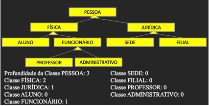
Se o sistema tiver quase todas as Classes com profundidade 0, a Herança (reuso) está comprometida. Profundidade muito grande pode apontar excesso de especialização de Classes – o número de Classes pode ser reduzido e os objetos tipificados.
Número de Filhos
Avalia o número de Classes que são herdeiras diretas (filhos diretos) de uma Classe. Calculado Classe a Classe
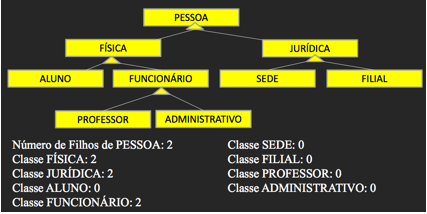
Classes com apenas 1 filho indicam que temos uma especialização de Classes excessiva, gerando complexidade desnecessária para o sistema.
Coesão em métodos
Avalia o quanto um método de um Classe depende de outros Métodos de outras Classes para resolver a sua lógica.
Uma Classe é coesa se os seus Métodos são coesos. Dois métodos de uma Classe X são coesos se utilizam os atributos da Classe X e não de outra.
LCOM = (número de Atributos usados no Método) / (número de atributos utilizados da Classe do Método pelo Método)
Calculado Método a Método
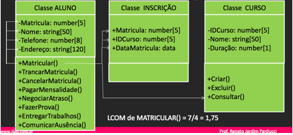
Se algum método da Classe utilizar atributos que não são dela, ele é avaliado como “não coeso”. O nível de coesão é dado pelo número de atributos utilizados pelo método sobre o total de atributos da Classe. Se a divisão der 1, a coesão é total. Quanto maior o valor obtido da divisão, pior a coesão. Se um método não está totalmente coeso, ele rompe com o princípio de Encapsulamento dos Objetos.
Acoplamento entre classes
Avalia o quanto uma Classe acessa Métodos e Atributos de outra Classe. Uma Classe está acoplada a outra quando seus métodos utilizam métodos da outra Classe e/ou operam diretamente sobre atributos da outra Classe. CBO = número Métodos de outras Classes + Número de Atributos de outras Classes que são usados por uma Classe avaliada. Calculado Classe a Classe
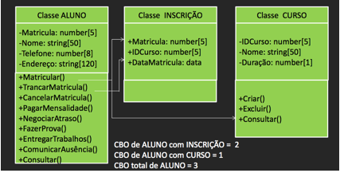
se o número de acoplamento for alto entre duas Classes, elas podem eventualmente ser Generalizadas ou seja, Unificadas. OU Se uma Classe aciona muitas outras Classes, isso pode indicar a necessidade de uma revisão do seu tipo e conteúdo (de Entidade para Controle, por exemplo) e portanto, pode implicar em reengenharia do projeto.
Resposta para uma Classe
Avalia quantas vezes um Método de uma Classe chama Métodos de outra Classe. Indica o nível de dependência que uma Classe tem das outras para resolver um processo de negócio (rotina da aplicação por completo). RFC = número de vezes em que ocorrem acionamentos (mensagens) que os Métodos da Classe fazem para Métodos de outras Classes. Calculado Classe a Classe 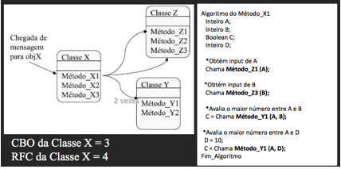
O nível de RFC é baseado na quantidade de métodos que uma Classe aciona de outras. Se uma Classe aciona demasiadamente uma única outra Classe, isso aponta que seus Métodos não lhe garantem auto suficiência, apontando uma provável necessidade de Agregação de Classes (Generalização) ou incorporação da lógica de um método de outra classe no método chamador, (revisão na lógica dos métodos, mudando escopos).
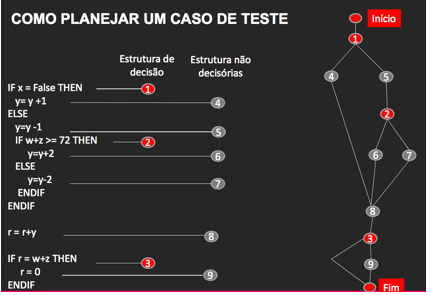
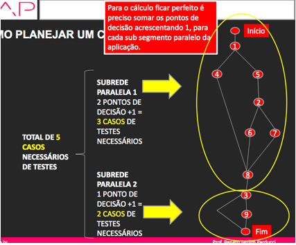
Aplicável ao teste Unitário.
Complementa o teste ciclomático porque avalia o mesmo ponto de decisão em 3
condições:
· Entrar no loop
· Ficar no loop ao menos uma vez
· Sair do Loop
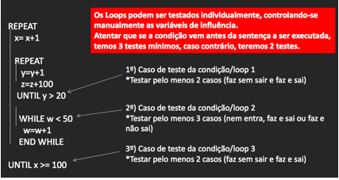
Aplicável ao teste Unitário.
Avalia valores que influenciam as decisões. Ajuda a definir quais os valores a serem informados para provocar os desvios no programa de aplicação
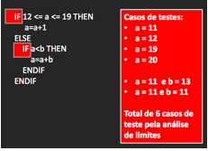
Aplicável ao teste Unitário.
Avalia grupos de valores que implicam nas mesmas decisões. Assim como o estudo de Limites, ajuda a definir quais os valores a serem informados para provocar os desvios no programa de aplicação. A diferença para a abordagem de Limites é que na regra de Partição de Equivalência, podemos trabalhar com valores não numéricos!
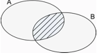
Se a especificação do software trata a validade código de estado da federação brasileira, considerando com válidos BA, SP, SC e RS, identificamos:
Conjunto da classe válida: qualquer uma entre BA, SP, SC e RS.
Conjunto da classe inválida: qualquer um que não seja BA, SP, SC ou RS .
Deve ser criado 1 teste com um valor de cada subconjunto válido ou inválido
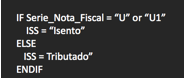
Fazer1 teste mínimo ou teser todos valores do conjunto válido e apenas um do conjunto inválido
Teste 1=> Serie_Nota_Fiscal = “U”
Teste 2=> Serie_Nota_Fiscal = “W12”
Nos testes unitários, devemos mascarar as linhas de comando de uma procedure, função ou método de Classe de objetos, simulando o retorno da função chamada com retornos corretos, de forma a permitir a avaliação da aplicação desenvolvida sem a contaminação do resultados das rotinas externas acionadas. Esse método, usa a técnica de Caixa Branca e é do tipo Funcional.
Quando precisamos fazer TESTES DE INTEGRAÇÃO, devemos ir retirando os comentários dos acionamentos das rotinas externas, um após o outro, de forma a validar isoladamente os retornos de cada rotina, facilitando a detecção de falhas.
É aplicado em especial na aceitação/homologação do sistema. Seu propósito é permitir a exploração do uso do sistema de forma livre mas sempre considerando o escopo definido para o projeto conforme lista de requisitos acordada.
Partem de descrições em um texto estruturado em lingua natural e geram códigos e bancos de dados em linguagens de programação e sistemas gerenciadores de bancos de dados.
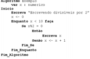
Partem de modelos lógicos técnicos (projeto lógico), em especial modelos de bancos de dados e protótipos de telas e geram os códigos finais de aplicação.
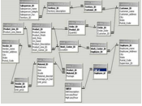
Permitem a diagramação lógica do entendimento de negócios (especificação de alto nível), gerando código de software e bancos de dados à partir dos diagramas de alto nível.
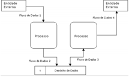
Possibilitam que a especificação de software ocorra em vários níveis de modelagem, refinando sucessivamente a solução.
Incluem: prototipador de interfaces, diagramador de bancos de dados, editor de linguagem de especificação lógica, interpretador ou compilador, depurador, ferramentas de testes e gerador de documentação, ferramentas de avaliação de qualidade, riscos e gestão de projeto. Geralmente possibilitam a engenharia reversa do software.
MÉTRICAS DE CONTROLE DA QUALIDADE: Definição de métricas de controle com base no princípio SMART para definição de indicadores de desempenho
CONTROLE ESTATÍSTICO DA QUALIDADE: Elaboração de Gráfico de Controle com base em Média e Desvio Padrão informados.
AUTOMAÇÃO: Recursos que as ferramentas de automação (CASE, GERENCIADORES DE CONTEÚDO e TEST TOOLS) possuem; quando automatizar e quando não.
MODELOS DE CAPACIDADE E MATURIDADE EM DESENV.SW: CMMi – Níveis de maturidade e visão geral do que é esperado em termos de práticas para cada nível.
|
Não é TimeBoxe do Scrum: |
Backlog do Produto |
|
O gráfico de Burn Down é usado no SCRUM para |
acompanhar o desenvolvimento pendente, dentro de uma Sprint |
|
Um caso de teste baseado em Caso de Uso... |
é aplicado em teste de sistema e baseado nos cenários de uso |
|
O NOC de uma Classe A é 1, e o DIT da Classe B é 0, o que significa que |
a classe A deve ser unificada com sua filha |
|
Um método de uma classe A acessa 2 atributos da própria classe e 2 de outra classe: |
seu LCOM é diferente de 1 e ele não é coeso |
|
Uma classe A acessa 2 atributos e 1 método da classe B |
A tem acoplamento 3 com B |
|
Uma Classe A tem uma Classe filha B e outra C. A Classe B por sua vez tem um filho D. |
A tem NOC = 2 |
|
No backlog de um produto consta a desenvolver uma transação de entrada de dados por digitação. |
Sua classificação de CFB é EE, segundo a APF. |
|
Um relatório de vendas realizadas no dia faz parte do escopo de um projeto. Segundo a APF: |
Esse CFB é uma CE |
|
Uma estrutura de dados será criada para guardar registros de vendas de uma loja. Essa estrutura |
é uma ALR, segundo a classificação de CFB da APF |
|
Quais os casos de teste por Limites para seguinte sentença de aplicação em Sw: "10 <= X <30". |
X=9, X=10, X=29, X=30 |
|
Qual a forma ideal para planejar casos de teste para: "Se Tipo_Compra = "A" ou "B" ou "R"..." |
Teste de condição e equivalência |
|
Um algoritmo é usado como base para planejar testes e contém 1 instrução CASO com 4 opções |
Ele terá 5 casos de testes segundo a Complexid. Ciclomática |
|
Um algoritmo tem 2 instruções "SE" na sua lógica. Por Complex.Ciclomática ele terá minimamente |
3 casos de teste |
|
Não devemos automatizar testes |
Em avaliações não funcionais que envolvam estética |
|
Não faz parte das técnicas de automação |
Escaneamento visual de uso |
|
Uma ferramenta CASE tem recursos de geração de código a partir de diagramas UML |
Ela é um Upper CASE ou I-CASE |
|
Uma dificuldade gerada pelo uso de CASE é |
Pouca flexibilidade na programação |
|
Os testes de software devem constar no SCRUM como |
Como tarefas associadas aos itens de produto |
|
Uma empresa A pratica Scrum no planejamento e controle de projetos. É possível afirmar |
Ela pode estar no nível 2 do CMMi |
|
Uma empresa faz verificações e validações de produto e processo através de testes. Ela deve |
Estar no nível 3 do CMMi |
|
Os resultados da qualidade do processo de software são gerenciados com controle estatístico. |
A empresa pode alcançar como nível máximo do CMMI, o nível 4 |
|
A equipe de Ti aplica análise de causa-e-efeito e Paretto para buscar a melhoria contínua. |
A empresa pode alcançar como nível máximo do CMMI, o nível 5 |
|
Uma empresa tem processos executados por seus departamentos sem padrão. Ela está |
no nível 1 do CMMi |